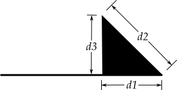

Tkinter 8.5 reference: a GUI for Python |
Tkinter 8.5 reference: a GUI for Python |
In general, a line can consist of any number of segments
connected end to end, and each segment can be straight or
curved. To create a canvas line object on a canvas C
id=C.create_line(x0,y0,x1,y1, ...,xn,yn,option, ...)
The line goes through the series of points (x0y0x1y1xnyn
Table 10. Canvas line options
activedash
|
These options specify the dash,
fill, stipple, and
width values to be used when the
line is active, that is, when the mouse is over
it.
|
activefill
| |
activestipple
| |
activewidth
| |
arrow |
The default is for the line to have no
arrowheads. Use arrow=tk.FIRST to
get an arrowhead at the (arrow=tk.LAST to get
an arrowhead at the far end. Use arrow=tk.BOTH for arrowheads at both ends.
|
arrowshape |
A tuple ( that
describes the shape of the arrowheads added by
the arrow option. Default is
(8,10,3).
 |
capstyle
|
You can specify the shape of the ends of the line
with this option; see Section 5.12, “Cap and join styles”. The default option
is tk.BUTT.
|
dash
| To produce a dashed line, specify this option; see Section 5.13, “Dash patterns”. The default appearance is a solid line. |
dashoffset
|
If you specify a dash pattern, the
default is to start the specified pattern at the
beginning of the line. The dashoffset option allows you to specify
that the start of the dash pattern occurs at a
given distance after the start of the line. See
Section 5.13, “Dash patterns”.
|
disableddash
|
The dash, fill,
stipple, and width
values to be used when the item is in the tk.DISABLED state.
|
disabledfill
| |
disabledstipple
| |
disabledwidth
| |
fill |
The color to use in
drawing the line. Default is fill='black'.
|
joinstyle
|
For lines that are made up of more than one line
segment, this option controls the appearance of
the junction between segments. For more details,
see Section 5.12, “Cap and join styles”. The
default style is ROUND
|
offset
| For stippled lines, the purpose of this option is to match the item's stippling pattern with those of adjacent objects. See Section 5.14, “Matching stipple patterns”.. |
smooth | If true, the line is drawn as a series of parabolic splines fitting the point set. Default is false, which renders the line as a set of straight segments. |
splinesteps |
If the smooth option is true, each
spline is rendered as a number of straight line
segments. The splinesteps option
specifies the number of segments used to
approximate each section of the line; the default
is splinesteps=12.
|
state
|
Normally, line items are created in state tk.NORMAL. Set this option to tk.HIDDEN to make the line invisible; set
it to tk.DISABLED to make it
unresponsive to the mouse.
|
stipple |
To draw a stippled line, set this option to a
bitmap that specifies the stippling pattern, such
as stipple='gray25'. See Section 5.7, “Bitmaps” for the possible values.
|
tags |
If a single string, the line is tagged with that
string. Use a tuple of strings to tag the line
with multiple tags. See Section 8.4, “Canvas tags”.
|
width | The line's width. Default is 1 pixel. See Section 5.1, “Dimensions” for possible values. |